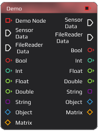
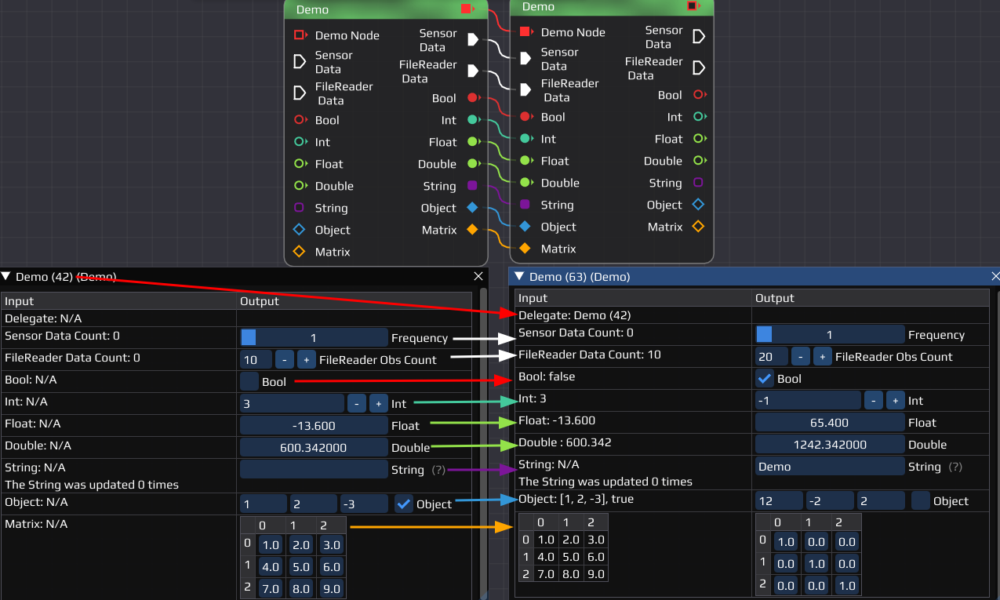

|
0.2.0
|
|
0.2.0
|

The Demo Node provides a demo window that shows all currently available Pins. They vary in their data type and can be either an input-Pin or an output-Pin. How to connect and ensure their compatibility, see the Pins and Connections .
The Demo Node has all available in-/output Pins. To run it, any amount of connections (or none) can be added. The Node is compatible with every other Node, including itself.
The Node can display any input and generate output for testing for different data types:
| Pin | Settings: Input | Settings: Output |
|---|---|---|
| Sensor Data (flow) | Counts incoming sensor data | Set output frequency |
| File Reader Data (flow) | Counts incoming file reader data | Set simulated file reader output amount |
| Bool | Shows input bool | Set output bool |
| Int | Shows input integer value | Sets output integer value |
| Float | Shows input float value | Sets output float value |
| Double | Shows input double value | Sets output double value |
| String | Shows input string and updates | Sets output string |
| Object | Shows input object values (3 int, bool) | Sets output object values (3 int, bool) |
| Matrix | Shows input matrix | Sets output matrix |
If you don't know how to reproduce any of the explained steps, read the Getting Started first.
Required Nodes:
- Place 2 Demo Nodes in your workspace
- Connect as many (or all) output Pins of one with the input Pins of the second Node
- Open both Node Settings windows
- Change the values
- Run the flow
Example of how the result should look like:
You can also connect any other Node and repeat the process.
Last updated: 2024-02-22